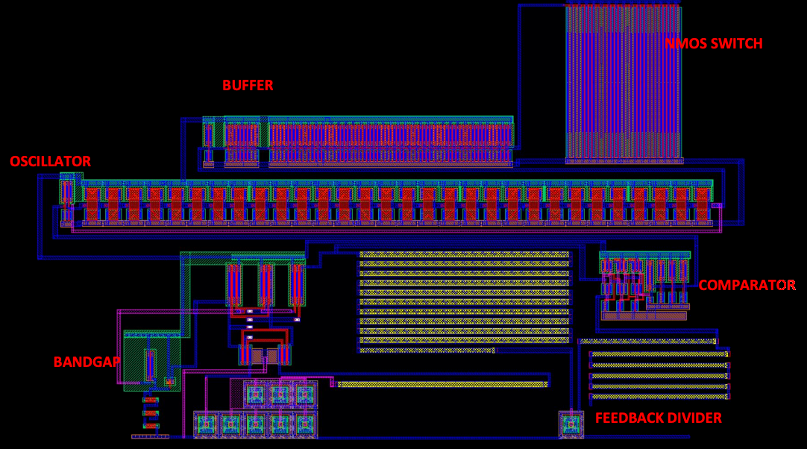
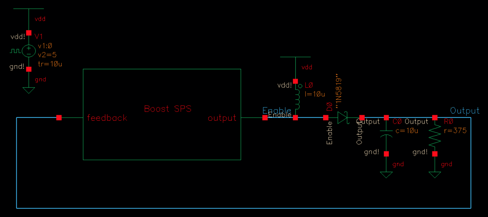
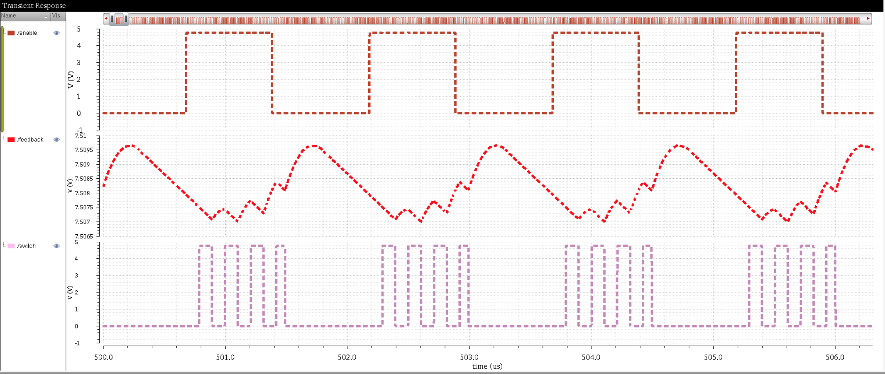

Boost SPS (Switching Power Supply) Layout and Simulation
Digital Circuit Design (EE421) Project
A Boost SPS is a component which can take an input voltage from a lower potential and boost it to a higher voltage. This is useful when using an electrical device that depends on a constant, reliable voltage source. This specific design can take an input voltage varying from 3.75V to 5.25V and output a constant 7.5V with a very tiny hysteresis curve oscillating between 2mV. A full comprehensive report detailing design choices and simulations can be viewed here.

Fig.1 - Boost SPS Layout.
The Boost SPS operates by feeding the output voltage into a comparator that compares the output voltage to a constant reference voltage generated by a bandgap voltage reference circuit. The output voltage is reduced by a sixth using a voltage divider when being compared to the reference voltage which sits at 1.25V. This design choice is to lower the power consumption of the module by only requiring the bandgap circuit to output a reference voltage of 1.25V as opposed to the expected output voltage of 7.5V.
If the comparator determines that the feedback voltage is lower than 1.25V then the comparator will be set to a logic 'high'. Conversely, the comparator will be set to a logic 'low' in the opposite case. When the comparator reads a logic 'high' the an oscillator will toggle an NMOS switch and allow the signal to be boosted. When the reverse case is true, the NMOS switch will remain off and the feedback voltage will fall. A simulation of the operation of the device can be viewed in figure 3.

Fig.2 - Boost SPS Schematic.

Fig.3 - Boost SPS Simulation with a VDD = 4.75V.
The layouts and schematics for this project were created using Cadence Virtuoso. Simulations were conducted using Spectre. All designs passed LVS and DRC parameters detailed for the C5 process that can be viewed here.